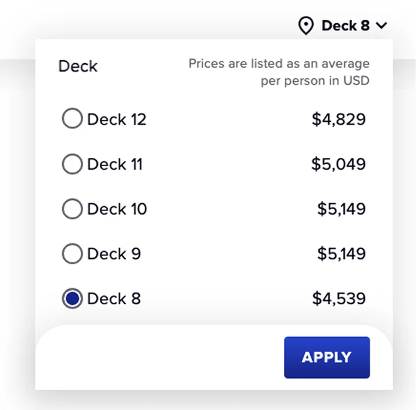
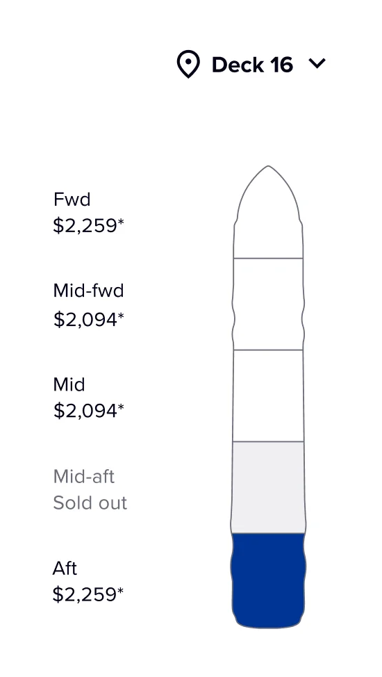

The Stateroom Location Selection step in the cruise booking funnel previously relied on a horizontally segmented deck plan, limiting users to viewing partial sections of the ship at a time.
This fragmented layout hindered spatial awareness and introduced friction in the decision-making process. The company aimed for a vertically oriented, full-deck plan view to address these limitations.
The cruise booking experience hinges on helping guests confidently choose their cabin location. By transitioning from a horizontal, sectioned layout to a vertically scrollable full-deck view, the redesign aims to improve visual continuity, reduce cognitive load, and support more intuitive comparisons.
This change reflects a broader commitment to enhancing transparency and control in the booking journey, while also requiring thoughtful adaptation of UI behaviors, responsiveness, and user guidance.
Six steps from search to booked cabin. The pivotal moment is step 05 — instead of a flat list, guests land on a deck plan with a specific room already recommended, with the option to swap it.
Step 01
Step 02
Step 03
Step 04
Step 05 · Key moment
Step 06
Decision time cut nearly in half by anchoring the guest on a confident default instead of an empty grid.
Booking completion lift — guests reach the summary step at a higher rate when a room is pre-selected.
Higher average revenue per booking — the deck plan surfaces upsell context (zone, view, deck) at the right moment.


At a glance, users can know the availability and starting prices on the different ship zones of a deck, what ship portion they are currently looking at, and also quickly jump to others by clicking on them on the ship diagram. This component also functions as a scroll indicator, allowing the user to tell their vertical position on the page.
The view auto-updates as the user scrolls from one zone to another. When opening the deck selector dropdown, users can see the availability and starting price of the different decks of the ship, and these UI elements stay sticky as the user scrolls down.
The Stateroom Selection Redesign contributed to a 7.7% increase in casino-related bookings based on a 6-month Month-over-Month trend.
The simple act of letting guests see the whole ship at once — instead of slices of it — reduced decision friction enough to register a measurable lift in downstream conversion. Spatial clarity is a feature.
This project was a reminder that interaction model changes — not just visual ones — are where booking funnels move the needle. Horizontal to vertical sounds simple; in user behavior it's a complete reframe.
I'd push earlier in the next funnel project for full-funnel measurement, not just the step we redesigned. The 7.7% lift suggests upstream and downstream effects worth tracking too.